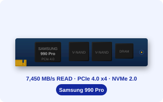

9100 Pro(PCIe 5.0)가 출시된 지금도 990 Pro를 사는 이유가 있습니다.
PCIe 5.0 메인보드가 없다면, 990 Pro의 7,450 MB/s는 병목이 되지 않습니다.
검증된 안정성, 합리적인 가격, 넓은 호환 범위가 990 Pro의 강점입니다.
2025년에 새로 내장 SSD를 고른다면 여전히 990 Pro가 기준입니다.
▣ 핵심 3줄 요약
- 990 Pro는 PCIe 4.0 x4 최고 수준의 7,450 MB/s 읽기 속도를 제공하며, PS5 확장 요구사항(5,500 MB/s)을 여유있게 충족합니다.
- PCIe 4.0을 지원하는 메인보드(Intel 11세대+, AMD Ryzen 3000+)에서 풀스펙 활용 가능. 호환 범위가 넓습니다.
- 9100 Pro(PCIe 5.0) 대비 가격이 낮으면서, 일반 게이밍·4K 편집 환경에서 체감 차이가 크지 않습니다.

①스펙 한눈에 보기
| 인터페이스 | PCIe 4.0 x4, NVMe 2.0 |
|---|
| 폼팩터 | M.2 2280 |
|---|
| 읽기 최대 속도 | 7,450 MB/s (공식 스펙) |
|---|
| 쓰기 최대 속도 | 6,900 MB/s (공식 스펙) |
|---|
| 랜덤 읽기 | 최대 1,600K IOPS |
|---|
| 랜덤 쓰기 | 최대 1,550K IOPS |
|---|
| 용량 라인업 | 1TB / 2TB / 4TB |
|---|
| TBW (1TB 기준) | 600TBW |
|---|
| 보증 | 5년 |
|---|
| PS5 호환 | ✅ (5,500 MB/s 최소 요구 충족) |
|---|
※ 히트싱크 버전도 별도 판매됩니다.
②PCIe 세대별 속도 비교
③실사용 시나리오 — 체감이 큰 세 가지
01PS5 확장 스토리지
PS5는 M.2 NVMe 슬롯을 통한 저장 용량 확장을 공식 지원합니다.
최소 요구 사항은 순차 읽기 5,500 MB/s 이상입니다.
990 Pro(7,450 MB/s)는 이 기준을 35% 이상 상회합니다.
게임 로딩 속도가 내장 825GB SSD와 비슷한 수준으로 유지됩니다.
PS5 M.2 설치에서 990 Pro는 가장 검증된 선택 중 하나입니다.
02PC 게이밍
DirectStorage 지원 게임에서 PCIe 4.0 SSD의 고속 I/O가 활용됩니다.
오픈월드 게임의 스트리밍 로딩, 씬 전환 대기 시간이 줄어듭니다.
일반 게임 로딩에서는 PCIe 4.0 vs 5.0 차이보다, SATA → NVMe 전환 시 체감 차이가 더 큽니다.
034K 영상 편집
DaVinci Resolve, Premiere Pro에서 4K H.265 소스를 프록시 없이 직접 편집 가능합니다.
순차 읽기 7,450 MB/s는 4K 멀티스트림 편집에서 병목이 되지 않습니다.
프로젝트 파일 + 렌더 대상 + 소스를 같은 드라이브에 두어도 작업 흐름이 유지됩니다.
④발열 — 히트싱크 버전 고려
60°C
연속 부하 시 표면 온도 약 50~65°C (히트싱크 없는 환경)
히트싱크 버전 적용 시 10~15°C 낮아짐 — PCIe 5.0 대비 발열 낮은 편
990 Pro는 PCIe 4.0 세대로, PCIe 5.0(9100 Pro) 대비 발열이 낮습니다.
메인보드 내장 히트싱크 또는 990 Pro 히트싱크 버전을 사용하면 써멀 스로틀링을 최소화할 수 있습니다.
⑤구매 판단 — 누구에게 맞나
✅ 990 Pro가 적합한 경우
- PCIe 4.0 메인보드 사용 중
- PS5 M.2 확장 계획
- 4K 영상 편집 PC
- 9100 Pro 대비 예산 절약 원함
- 안정적이고 검증된 제품 선호
⚠️ 9100 Pro 검토 권장
- 최신 PCIe 5.0 메인보드 보유
- 6K/8K 영상 제작 워크스테이션
- 최고 성능이 최우선인 경우
- 8TB 대용량 필요
⑥구매 전 체크리스트
호환성 확인
메인보드 또는 노트북의 M.2 슬롯이 PCIe 4.0을 지원하는가?
모델 선택
히트싱크 버전이 필요한가? (메인보드 히트싱크 없는 경우)
1TB / 2TB / 4TB 중 용량을 선택했는가?
PS5 설치 시 추가 확인
히트싱크 두께가 PS5 내부 공간에 맞는가? (약 8mm 이하 권장)
▣ 오늘 내용 요약
- 990 Pro는 PCIe 4.0 x4 기준 읽기 7,450 MB/s로, PS5 확장 요구사항(5,500 MB/s)을 여유있게 충족하며 일반 게이밍·4K 편집에 최적입니다.
- PCIe 4.0을 지원하는 다양한 메인보드와 호환되어 사용 범위가 넓습니다. 9100 Pro 대비 발열도 낮습니다.
- PCIe 5.0 메인보드 없이 최고 가성비 NVMe를 찾는다면 990 Pro는 2025년에도 강력한 선택지입니다.
💬 게임 로딩에서 SSD 속도 차이를 실제로 느껴보신 적 있으신가요?
HDD→SSD, SATA→NVMe 업그레이드 경험을 댓글로 공유해 주세요!
출처
삼성전자 공식 사이트 (990 Pro 제품 페이지) — 2022~2023년
소니 플레이스테이션 공식 — PS5 M.2 SSD 확장 요구사항 — 2022년
퀘이사존 — 삼성 990 Pro 2TB 벤치마크 리뷰 — 2023년
본 글은 공개된 공식 스펙 및 실사용 후기를 바탕으로 작성됐습니다. 가격은 시점에 따라 변동될 수 있습니다.
#삼성990Pro
#990Pro후기
#PCIe4SSD
#내장SSD추천
#M2SSD
#삼성내장SSD
#PS5SSD
#게이밍SSD
#4K편집SSD
#NVMe추천
#7450MBs
#SSD구매가이드